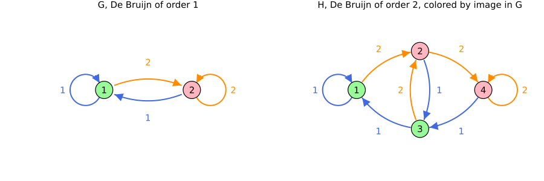

Comparing graphs
Parts I and II judge a graph on one system, by solving. Comparing judges two graphs for every system at once, without solving anything. Given a template $\mathcal V$,
\[G \le_{\mathcal V} H \quad \text{when every system with a certificate on } G \text{ in } \mathcal V \text{ also has one on } H,\]
so that $H$ is at least as good as $G$, whatever the system ((Debauche et al., 2022), Def. 4). The order depends on the two graphs and the template only: it tells, before any system is given, whether a larger graph can pay off, and it orders the graphs of the literature into hierarchies. Two tools prove it:
- a simulation, which proves it for every template;
- a simulation after a lift, which proves it for the templates closed under the lift's operation.
Simulation
$G$ simulates $H$ when a map $f$ from the nodes of $H$ to the nodes of $G$ keeps every edge:
\[(a, b, i) \text{ an edge of } H \implies (f(a), f(b), i) \text{ an edge of } G.\]
Each node $a$ of $H$ then takes the function $V_{f(a)}$ of its image, and every edge inequality on $H$ is one on $G$: a certificate on $G$ gives one on $H$, in any template. Conversely, $G \le_{\mathcal V} H$ for every template only when $G$ simulates $H$ ((Philippe and Jungers, 2019), Thm. 3.5). simulation(G, H) returns $f$, or nothing.
On the De Bruijn hierarchy, order 1 simulates order 2. Each node of $H$ is colored as its image in $G$, and every edge of $H$ has an edge of $G$ with the same mode between the same colors:

PCC.simulation(PCC.de_bruijn(1, 2), PCC.de_bruijn(2, 2)),
PCC.simulation(PCC.de_bruijn(2, 2), PCC.de_bruijn(1, 2))([1, 2, 1, 2], nothing)Order 2 is therefore at least as good as order 1 for every template; order 2 does not simulate order 1, so the reverse fails for some template. The one-node graph simulates every graph: no graph gives a worse certificate than a common Lyapunov function.
Simulation after a lift
Without a simulation, $H$ may still be at least as good as $G$ for the templates closed under some operation. A lift valid for these templates never makes $G$ worse (see Lifts), so when the lifted $G$ simulates $H$, $G \le_{\mathcal V} H$ for every such template:
| Lift | For templates closed under | Decided by | Without a simulation |
|---|---|---|---|
MinLift | minimum | a relation between the nodes, without building the lift | the order fails for some such template |
MaxLift | maximum | the same relation on the dual graphs | the order fails for some such template |
SumLift() | addition | a linear program, which needs an optimizer | the order fails for some such template |
CompositionLift(T), BackwardCompositionLift(T) | composition with the matrices of a system, or with their inverses | building the lift and searching it | nothing is proved |
The four rows are Theorems 8.1 and 8.5, Corollary 8.11, and Theorems 7.65 and 7.66 of (Debauche, 2024).
is_closed_under gives the closures of a template, and is_valid whether a lift is valid for a template on a system, which can also hold through the dual template (see Duality). What works with what lists the lifts valid for each template.
Comparing in one call
compare(G, H) tries the lifts and returns those whose lifted $G$ simulates $H$:
c = PCC.compare(PCC.de_bruijn(1, 2), PCC.common_graph(2))
PCC.simulations(c)1-element Vector{Pair{PathCompleteCertificates.AbstractLift, Any}}:
PathCompleteCertificates.MinLift() => [[1, 2]]The min lift of the De Bruijn graph of order 1 simulates the one-node graph. For every template for which the min lift is valid, such as the linear copositive template on a positive system, this De Bruijn graph therefore gives no better certificate than the one-node graph. Given templates and a system, compare also lists the templates for which the order is proved; see Compare two graphs.